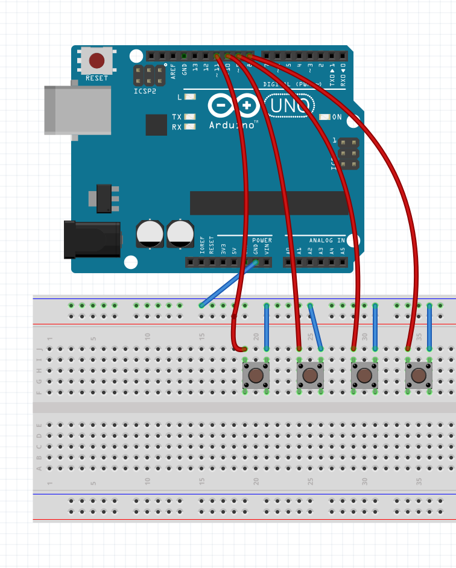
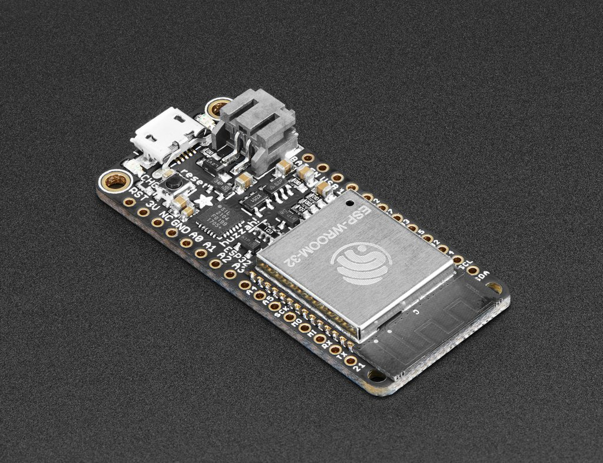

Internet of Thngs: Week 5
Internet of Thngs: Week 5
Internet of Thngs: Week 5
Internet of Thngs: Week 5
Slides are here:
http://mhellar.github.io/aau_iot/week5
Grab the code here:
http://bit.ly/2mCuivO
- Projection Mapping Excercise
- More NodeJS
- Conductive Paint Demo
- The ESP32 Introduction
Topics for This Week:
Download
In the terminal type 'sudo npm intstall live-server -g'
'cd' into the maptastic js folder
Type 'live-server'
Wire up 4 buttons

Upload buttons.ino
Drag serial_ws_maptastic onto you code editor
Edit line 8 of index.js to match your serial port
CD into the folder && node index.js && open localhost:3000 in the browser
Drag serial_ws_maptastic_video onto you code editor
Edit line 8 of index.js to match your serial port
CD into the folder && node index.js && open localhost:3000 in the browser
Lets test it with the projectors!

with NodeJS
Windows Users Dowload espeak
EspeakOpen a terminal
Mac Users
Type 'say' + space + "something to say"
Windows Users
Type "C:\\Program Files (x86)\\eSpeak\\command_line\\espeak.exe" + space + "something to say"
type 'node speak.js'
//the child_process library let's us execute command line commands, https://nodejs.org/api/child_process.html
var exec = require('child_process').exec;
//This variable stores the command we want to execute, we are going to use the say command
//Mac users use this line
var say = 'say ';
//Windows users use this line instead
//var say = '"C:\\Program Files (x86)\\eSpeak\\command_line\\espeak.exe" ';
//let's make a function that speaks
function speak(whatosay){
//speak the string
exec(say + whatosay);
//log it to the console
console.log(whatosay)
}
// call the function
speak("I just do this");
*/
Modify the program, change the voice and what it says.
Save it and then run node app.js
Node Package Manager
NPM is an online repository of JavaScript modules, many of which are specifically written for Node. When you install Node on your computer, you also get a program called npm(Node Package Manger), which provides a convenient interface to this repository.
https://www.npmjs.com/
awesome-nodejs
- Make a new folder called cowsay
- Open the terminal and type 'cd' + SPACE + drag folder onto the terminal
- Type 'npm init'
- Fill out the questions
- Drag the folder on to Sublime text
- Have a look at the package.json file that was created
- Type 'npm install cowsay --save'
- Create a new file in Sublime
- Enter the code below:
- Save as 'index.js' in your new folder
var cowsay = require("cowsay");
console.log(cowsay.say({
text : "I'm a moooodule",
e : "oO",
T : "U "
}));
In the terminal run 'node index.js'
Introduction to callbacks
Node.js® is a JavaScript runtime built on Chrome's V8 JavaScript engine. Node.js uses an event-driven, non-blocking I/O model that makes it lightweight and efficient.
Here is a simple synchronous example, meaning you can read the code top to bottom just like a book:
var myNumber = 1
function addOne() { myNumber++ } // define the function
addOne() // run the function
console.log(myNumber) // logs out 2
Here node is firing off addOne() and console.log(myNumber) at the same time
var fs = require('fs') // require is a special function provided by node
var myNumber = undefined // we don't know what the number is yet since it is stored in a file
function addOne() {
fs.readFile('number.txt', function doneReading(err, fileContents) {
myNumber = parseInt(fileContents)
myNumber++
})
}
addOne()
console.log(myNumber) // logs out undefined -- this line gets run before readFile is done
Because reading from the filesystem take longer that console.log it returns console.log(myNumber) first. This is non-blocking
Why do we get undefined when we log out the number this time? In this code we use the fs.readFile method, which happens to be an asynchronous method. Usually things that have to talk to hard drives or networks will be asynchronous.
If they just have to access things in memory or do some work on the CPU they will be synchronous.The reason for this is that I/O is reallyyy reallyyy sloowwww. A ballpark figure would be that talking to a hard drive is
about 100,000 times slower than talking to memory (e.g. RAM).
We can fix the code by placing the console.log in the callback.
var fs = require('fs') // require is a special function provided by node
var myNumber = undefined // we don't know what the number is yet since it is stored in a file
function addOne() {
fs.readFile('number.txt', function doneReading(err, fileContents) {
myNumber = parseInt(fileContents)
myNumber++
console.log(myNumber) // Putting the console.log statement here returns the result I want
})
}
addOne()
Node does Input/Output in a way that is asynchronous which lets it handle lots of different things simultaneously. For example, if you go down to a fast food joint and order a cheeseburger they will immediately take your order and
then make you wait around until the cheeseburger is ready. In the meantime they can take other orders and start cooking cheeseburgers for other people.
Imagine if you had to wait at the register for your cheeseburger,
blocking all other people in line from ordering while they cooked your burger! This is called blocking I/O because all I/O (cooking cheeseburgers) happens one at a time. Node, on the other hand, is non-blocking, which means it
can cook many cheeseburgers at once.
You use Callbacks in Jquery all the time
$("button").click(function(){
$("p").hide(1000);
alert("The paragraph is now hidden");
});
Homework - read this article
Art of Node: CallbacksBuilding out a basic web application with express.
Express.js is a Node.js web application server framework, designed for building single-page, multi-page, and hybrid web applications. It is the de facto standard server framework for node.js
Hello World
var express = require('express');
var app = express();
app.get('/', function (req, res) {
res.send('Hello World!');
});
app.listen(3000, function () {
console.log('Example app listening on port 3000!');
});
req is an object containing information about the HTTP request that raised the event. In response to req, you use res to send back the desired HTTP response.
We can also serve files:
- Make a new folder called webserver
- Open the terminal and type 'cd' + SPACE + drag folder onto the terminal
- Type 'npm init'
- Fill out the questions
Install Express
Type: sudo npm install --express
- Create a new file in Sublime
- Enter the code below:
- Save as 'index.js' in your new folder
//import express
var express = require('express');
//create express object named app
var app = express();
//instantiate a server on port 3030
var server = app.listen(3030);
//expose the local public folder for inluding files js, css etc..
app.use(express.static('public'));
//on a request to / serve index.html
app.get('/', function(req, res) {
res.sendFile(__dirname + '/index.html');
});
- Create a new file in Sublime
- Enter the code below without the comments:
- Save as 'index.html' in your new folder
Open http://localhost:3030/ in the browser
Takes a few minutes to add some html to the page
Websockets:
HTML5 WebSocket represents the first major upgrade in the history of web communications. Before WebSocket, all communication between web clients and servers relied only on HTTP. Now, dynamic data can flow freely over WebSocket connections that are persistent (always on), full duplex (simultaneously bi-directional) and blazingly fast.
Socket.io
Socket.IO enables real-time bidirectional event-based communication.
CD to websocket_simple
npm Install
node app.js
Lets combine express, websockets and serialport!
Connect a potentiometer

Connect a potentiometer
1: Upload AnalogInOutSerial.ino to arduino from AnalogInOutSerial in the code folder
2: cd into serialbasic in the code folder && npm install
3: Run node index.js from the serialbasic from serialbasic in the code folder
1: cd into serial_ws in the code folder && npm install
2: Run node index.js from the serialbasic from serial_ws in the code folder
Drag serial_ws_maptastic onto you code editor and lets review!
Conductive Paint
Conductive Paint Hands On
Each group should get there own jar
Amazon prime linkThe ESP32
ESP32 Pinout

Homework!!!
Read this article!!!Install for Arduino
ESP for ArduinoHomework!!!
Each group needs to present their 1st draft of a interface next week